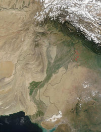
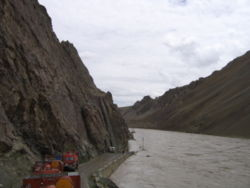
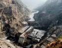

|
Home | About Us | Services | Team | Join Us | Awards | Calendar | Vote | Supporters | Contact |
|||||||||||||||||||||||||||||||||||||||||||||||||||||||||||||||||||||||||||||||||
|
| ||||||||||||||||||||||||||||||||||||||||||||||||||||||||||||||||||||||||||||||||
|
Peace And Environment Protection KASHMIR
|
|||||||||||||||||||||||||||||||||||||||||||||||||||||||||||||||||||||||||||||||||
|
Navigating Peace through Indus River System Since 1960 India and Pakistan
 Indus - Trans-Himalayan river of southern Asia. It is one of the world's longest rivers, with a length of 1,800 mi (2,900 km). Its annual flow of 272 billion cu yd ( 207 billion cu m) is twice that of the Nile, and three times that of the Tigris and Euphrates combined. Indus Basin Irrigation System (IBIS) is the largest contiguous irrigation system in the world developed over the last 140 years. The lengths of main canals, branches, distributaries and minors are 4230, 6835, 25874 and 19189 km respectively, servicing IBIS through 110,000 watercourses. The drainage area of the Indus is ~ 47 x 106 km2 and river basin transport 42 x 106t total annual dissolved flux at a solute erosion rate of 9t km2 yr-1 to Arabian Sea. The ultimate source of the Indus is in Tibet; it begins at the confluence of the Sengge and Gar rivers that drain the Nganglong Kangri and Gangdise Shan mountain ranges near Lake Mansrowar in the Himalayan catchment area and emerges from the land of glaciers on the northern slopes of the Kailash ranges, some 5182 m above sea level and flows northwest through valleys of the Himalayas. After crossing into the Kashmir region, it continues northwestward through the Indian- and Pakistani-administered areas and then turns south into Pakistan. Swelled by tributaries from the Punjab region, including the Jhelum, Chenab, Ravi, Beas, and Sutlej rivers, it widens and flows more slowly. It has supplied water for irrigation on the plains of Pakistan since early times.
The Indus is, by volume, the largest exotic river (one that mainly flows through a country from which it receives no water) in the world. It is one of the few rivers in the world that exhibit a tidal bore. The Indus system is largely fed by the snows and glaciers of the Karakoram, Hindu Kush and Himalayan ranges of Tibet, Kashmir and Northern Areas of Pakistan. The flow of the river is also determined by the seasons - it diminishes greatly in the winter, while flooding its banks in the monsoon months from July to September. There is also evidence of a steady shift in the course of the river since prehistoric times - it deviated westwards from flowing into the Rann of Kutch. The Indus River feeds the Indus submarine fan located in the Arabian Sea, which is the second largest sediment body on the Earth at around 5 million cubic kilometers of material eroded from the mountains.
Its past can be analyzed by a
recent studies of the sediment in the modern river indicate that the
Karakoram Mountains in northern Pakistan are the single most important
source of material, with the Himalaya provide the next largest
contibution, mostly via the large rivers of the Punjab (i.e., the Ravi,
Jhellum, Chenab and the Sutlej). Analysis of sediments from the
Arabian Sea by marine geologists Peter Clift and Jerzy Blusztajn has
demonstrated that prior to five million years ago the Indus was not
connected to these Punjab Rivers which instead flowed east into the
Ganges and were captured after that time. Earlier work, also by Peter
Clift, showed that sand and silt from western Tibet was reaching the
Arabian Sea by 45 million years ago, implying the existence of an
ancient Indus River by that time. The delta of this proto-Indus river
has subsequently been found in the Katawaz Basin, on the
Afghan-Pakistan border. Most recently the Indus was paralleled by the
mythical Saraswati River, which the Rigveda suggests flowed from the
Himalaya between the Sutlej and the Yamuna Rivers, close to modern day
Chandigarh. The fate of the Saraswati is unknown and may have dried up
during weakening of the monsoon after 5000 yrs ago or it too make have
been captured into the Indus.
The Indus river basin stretches from the Himalayan Mountains in the north to the dry alluvial plains of Sindh in the south. The area of Indus basin is 944,574 sq.km. The vast alluvial plains of the Indus basin (the Indus plains) cover an area of 207,200 sq.km. The relatively flat plain is largely made up of deep alluvium deposited by Indus river and its tributaries. Primary source of surface water is precipitation in the form of rainfall and snow and the glacier melt. Glaciers in the upper Indus basin are the largest outside the polar region and serve as natural storage reservoirs that provide perennial supplies to river Indus and some its tributaries.
Prime mover of Pakistan's economy is the irrigated agriculture in the Indus plains. At the time of partition in 1947, population of area now forming Pakistan was about 33 mln. In 1965, it increased to 51.2 mln. (18% urban, 82% rural) The present (2007) population of Pakistan is 164.5 mln. (43 % urban, 57 % rural).
 The Indus Basin Project (IBP) was developed in pursuance of the agreement reached with India under the Indus Water Treaty . The two main components of IBP were the major storage reservoirs on Jhelum (Mangla) and Indus (Tarbela) to mitigate the effect of diverting the three eastern rivers by India and to increase agricultural production in the IBIS. As a part of implementation schedule of IBP, Mangla Dam Project was taken up first and completed by 1968. In the meantime, decision was also taken to go ahead with Tarbela dam after its re-evaluation by the WB and lining up of the additional funding. Consequently construction started in 1968 and substantially completed by 1974. Several major policy measures have been taken during the past 50 years to deal with the impending crisis from India's intention to divert eastern rivers through: implementation of IBP; and expanded irrigation facilities to meet the needs of the rapidly growing population. This has led to evolution of the basic policy of emphasising sustainable and progressive irrigated agriculture.In August 1947, when South Asia was divided into two independent countries, there existed in the area, one of the most highly developed irrigation systems in the world. The system catered to approximately 37 million acres of land, supplying it with the waters of the Indus rivers. All available water supplies were allocated to various princely States and provinces, in conformity with the principle of equitable apportionment of waters. The Indus System of Rivers in the Indus Basin comprises of the Indus and its five main tributaries i.e. Jhelum, Chenab, Ravi, Beas and Sutlej. They all combine into one river near Mithan Kot in Pakistan and flow into the Arabian Sea, south of Karachi. The total area of the Indus Basin is roughly 365,000 miles2. Most of it lies in Pakistan and the remaining is part of Pakistan Administrated Jammu and Kashmir, India, China and Afghanistan. At the time of Independence, 31 out 37 million acres in Pakistan were irrigated. The boundary line between the two countries being partitioned was drawn without any regard to the existing irrigation works. It was, however, affirmed by the Boundary Commission. Representatives of the affected zones expressly agreed before the Arbitral Tribunal that the authorized zones in the common water supply would continue to be respected.
Sharing Indus River Basin
The waters of the Indus Basin
rivers had been used for irrigation purposes even before the
development of the present canal system by British engineers in the
early 19th century. There were numerous inundation canals in the Indus
Valley, which diverted supplies directly from the rivers during the
high flow periods, without any diversion works across the riverbed.
The local community, tribes, or states managed these inundation
canals. From the middle of the 19th century onwards, irrigation was
gradually extended through the introduction of improved methods and
the construction of diversion works across the rivers.
THE RATIONALE FOR THE INDUS WATER
TREATY
MAIN CONTITUENTS OF THE INDUS WATER
TREATY
Provisions regarding the Eastern Rivers:
Provisions regarding the Western Rivers:
Provisions regarding the Eastern and western Rivers:
Defects of the settlement plan:
Discussion and Post Treaty Works
Under the Treaty, restrictions have been placed on the design and operation of Hydroelectric Plants, Storage Works and other river works to be constructed by India on the Western Rivers. India is required to supply Pakistan with certain specified information relating to these works at least 6 months in advance of undertaking the river works, to enable Pakistan to satisfy itself that the design conforms to the criteria set out in the Treaty. Within a specified period ranging from two to three months of the receipt, Pakistan has the right to communicate its objections in writing to India, if any. Under the Treaty, Pakistan was required to construct and bring into operation a system of works, which could accomplish the replacement of supplies for irrigation canals from the Western Rivers in Pakistan. These included those canals that were dependent on water supplies from the Eastern Rivers on 15th August 1947. These replacement works, comprising two storage dams, six new barrages, remodeling of two existing barrages, seven new inter-rivers link canals and remodeling of two existing link canals, have since been completed.
Under the Treaty, the waters of the Eastern Rivers stand allocated to India and those of Western Rivers largely to Pakistan. Agriculture use permitted to India from Western Rivers Over and above 6.42 lakh acres being irrigated by India from the Western Rivers on the effective date i.e. 1.4.1960 and the permissible withdrawals from the Ranbir and Pratap Canals, India is entitled to irrigate additional irrigated cropped area (ICA) as per details given below:-
A restriction has however been put on India that until India can release water from the conservation storage as defined in Annexure E of the Treaty, the new areas developed by withdrawals from river flow shall not exceed the following:-
Storage Permitted to India on Western Rivers In accordance with the Indus Waters Treaty, the aggregate storage capacity of all single purpose and Multi-purpose reservoirs which may be constructed by India after Effective Date shall not exceed the following:-
Provided that
Permanent Indus Commission
Article VIII of the Indus Waters Treaty provides for constitution of Permanent Indus Commission. In accordance with the Treaty both India and Pakistan have each created a post of Commissioner for Indus Waters. The two Commissioners together constitute the Permanent Indus Commission whose purpose is to establish and maintain co-operative arrangements for the implementation of the Treaty, to promote co-operation between the Parties in the development of the waters of the Rivers and to settle promptly any question arising between the Parties. Unless either Government decides to take up any particular question directly with the other Government, each Commissioner will be representative of his Government for all matters arising out of the Treaty and will serve as a regular channel of communication in all matters relating to implementation of the Treaty. The Commission is also required to undertake periodical inspection of the River for ascertaining the facts connected with the various developments and works on the Rivers. 99 visits have so far been undertaken, the last being in March, 2000.
The Commission has also to meet regularly at least once a year, alternately in India and Pakistan and to submit to the Govt. of India and Govt. of Pakistan, before the first of June of every year, a report on its works for the year ended on the preceding 31st March, and may submit to the two Governments other reports at such times as may be considered necessary. So far, 86 meetings of the Permanent Indus Commission have been held. The last meeting was held in Pakistan during May/June, 2001.
Exchange of Information
In fulfillment of the obligations of Indus Waters Treaty, India has supplied the requisite data of 27 Hydel Projects including Small Plants, Run-of-River Plants and a Storage Work to Pakistan. Every month, the data with respect to the flows in and utilization of the waters of the rivers of Indus Basin are being exchanged. Also every year before 30th November, India furnishes to Pakistan the data of Irrigated Cropped Area (ICA) from the Western Rivers. As per the provisions of the Indus Waters Treaty, flood flows of rivers the Ravi, the Sutlej, the Beas, the Jammu Tawi, the Chenab and the Jhelum are being transmitted to Pakistan through telegram since 1962. Broadcasting of flood flows of rivers the Ravi, the Jammu Tawi and the Chenab are also being done since 1974. Subsequently on the request of Pakistan, an agreement has been signed between the Commissioners for Indus Waters of India and Pakistan in 1989 to communicate the flood flows of rivers the Ravi and the Sutlej to Pakistan on telephone during the period 1st July to 10th October every year. A control room is operated round the clock in the Indus Wing for the above purpose. No cost is being charged to Pakistan for communication of flood flow even though the Treaty provides for the same. This is purely a gesture of goodwill from our country towards Pakistan. The agreement is however reviewed every year. However, from the year 2001, Pakistan has been asked to reimburse the cost of transmission of flood data as per actual and the matter is still under correspondence.
Achievements On Eastern Rivers With the completion of Bhakra Nangal and Beas Project and Indira Gandhi Canal Project (partially completed), India has been utilizing on an average about 37 BCM (30 MAF) of the waters of the Eastern Rivers allocated to it. The remaining waters will also be completely harnessed after commissioning of Thein Dam on river Ravi, remaining portion of Indira Gandhi Canal Project and Sutlej-Yamuna Link Canal which are under construction. Also against 11,219 MW hydro electric potential at 60% load factor on the Eastern Rivers, projects having 3,945 MW installed capacity have already been completed and projects having 4,144 MW installed capacity are in different stages of construction.
On Western Rivers
Since India has not built any Conservation Storage on Western Rivers, India can develop irrigation by withdrawals from river flow only within the restricted area of 2,70,000 acres over and above the area as on effective date. India could irrigate an area of 8,05,745 acres against permissible of 9,12,477 acres during the year 1999-2000 as per details given below:
Also against expected 8,769 MW of power at 60% load factor from Western Rivers, projects having installed capacity of about 1,348 MW have already been completed and projects having installed capacity of about 1,300 MW are in different stages of construction.
Will Indus Water Treaty Sustain its Objectives ?

World Bank Vice President Ismail Serageldin claimed that “the wars of the next century will be about water.” These apocalyptic warnings fly in the face of history: nations have gone to war specifically over water resources for thousands of years. International water disputes —even among fierce enemies— may be resolved peacefully, even as conflicts erupt over other issues. In fact, instances of cooperation between riparian nations outnumbered conflicts by more than two to one between 1945 and 2007. Why ? Because water is so important, nations cannot afford to fight over it. Instead, water fuels greater interdependence. By coming together to jointly manage their shared water resources, countries can build trust and prevent conflict. Water can be a negotiating tool, too: it can offer a communication lifeline connecting countries in the midst of crisis. Thus, by crying “water wars,” doomsayers ignore a promising way to help prevent war: cooperative water resources management.
History of Water Conflicts and Treaties
Of course, people compete—sometimes violently—for water. Within a nation, users— farmers, hydroelectric dams, recreational users, environmentalists—are often at odds, and the probability of a mutually acceptable solution falls as the number of stakeholders rises. Water is never the single—and hardly ever the major—cause of conflict. But it can exacerbate existing tensions between India and Pakistan. History is littered with examples of violent water conflicts: But these conflicts usually break out within nations. International rivers are a different story. The world’s 263 international river basins cover 45.3 percent of Earth’s land surface, host about 40 percent of the world’s population, and account for approximately 60 percent of global river flow. And the number is growing, largely due to the “internationalization” of basins through political changes like the breakup of the Soviet Union, as well as improved mapping technology. Strikingly, territory in 145 nations falls within international basins, and 33 countries are located almost entirely within these basins. As many as 17 countries share one river basin, the Danube. Contrary to received wisdom, evidence shows this interdependence does not lead to war.
In the last 50 years, only 37 disputes involved violence, and 30 of those occurred between Israel and one of its neighbors. Outside of the Middle East, only 5 violent events while 157 treaties were negotiated and signed. The total number of water-related events between nations also favors cooperation: the 1,228 cooperative events dwarf the 507 conflict-related events. Despite the fiery rhetoric of politicians—aimed more often at their own constituencies than at the enemy—most actions taken over water are mild. Of all the events, 62 percent are verbal, and more than two-thirds of these were not official statements. Simply put, water is a greater pathway to peace than conflict in the world’s international river basins. International cooperation around water has a long and successful history; some of the world’s most vociferous enemies have negotiated water agreements. The institutions they have created are resilient, even when relations are strained. The Mekong Committee, for example, established by Cambodia, Laos, Thailand, and Vietnam in 1957, exchanged data and information on the river basin throughout the Vietnam War. Israel and Jordan held secret “picnic table” talks to manage the Jordan River starting in 1953, even though they were officially at war from 1948 until the 1994 treaty. The Indus River Commission survived two major wars between India and Pakistan. And all 10 Nile Basin riparian countries are currently involved in senior government–level negotiations to develop the basin cooperatively, despite the verbal battles conducted in the media. Riparians will endure such tough, protracted negotiations to ensure access to this essential resource and its economic and social benefits. Southern African countries signed a number of river basin agreements while the region was embroiled in a series of wars in the 1970s and 1980s, including the “people’s war” in South Africa and civil wars in Mozambique and Angola. These complex negotiations produced rare moments of peaceful cooperation. Now that most of the wars and the apartheid era have ended, water management forms one of the foundations for cooperation in the region, producing one of the first protocols signed within the Southern African Development Community (SADC).
Good governance—the lack of corruption— is the basic foundation for the success of any agreement. Obviously, money is also a big challenge. But good governance and money are not enough. Several policy initiatives could help peacemakers use water to build peace:
Water management is, by definition, conflict management. For all the 21st century wizardry—dynamic modeling, remote sensing, geographic information systems, desalination, biotechnology, or demand management—and the new-found concern with globalization and privatization, the crux of water disputes is still little more than opening a diversion gate or garbage floating downstream. Obviously, there are no guarantees that the future will look like the past; water and conflict are undergoing slow but steady changes. An unprecedented number of people lack access to a safe, stable supply of water. Two to five million people die each year from water-related illness. Water use is shifting to less traditional sources such as deep fossil aquifers and wastewater reclamation. Conflict, too, is becoming less traditional, driven increasingly by internal or local pressures or, more subtly, by poverty and instability. These changes suggest that tomorrow’s water disputes may look very different from today’s. No matter what the future holds, we do not need violent conflict to prove water is a matter of life and death. Water—being international, indispensable, and emotional—can serve as a cornerstone for confidence building and a potential entry point for peace. More research could help identify exactly how water best contributes to cooperation. With this, cooperative water resources management could be used more effectively to head off conflict and to support sustainable peace among nations.
Statement of Significance eIEN Kashmir
Water management issues in Jammu
and Kashmir, which once was a lively hydraulic society with elaborate
irrigation systems now lying in a decrepit conditions, with militancy
and war too taking its toll on water infrastructure, are very
critical. Irony is that the state itself is well endowed with water
resources and has some of the largest freshwater lakes, as also large
areas under snow-peaked mountains and glaciers. It is the origin of
three mighty rivers - Chenab, Jhelum and Indus - and their tributaries
which drive the agrarian economies of north-western India and
Pakistan. But the state itself reels under growing water scarcity and
ecological degradation, with depleting glaciers and erosion of its
vast biological pool.
Pollution from agriculture and industrial
effluents exists but has not yet reached
the level threatening the biodiversity of
the area. Key factors affecting the
integrity include irrigation
facilities, intended hydropower projects,
fishing practices as well as land-based
pollution. eIEN Kashmir has recently initaited very important project in order to further involve both India and Pakistan in terms of Indus Basin . The project called as Indus Transboundary Environmental Action Project will be the largest project in the Shared Vision Program of the Indus Basin Society. It will provide a strategic framework for environmentally sustainable development of the Indus River Basin and support survival of INDUS DOLPHIN (Platanista minor) the world's second most endangered species among Dolphin's besides 65 fish species, 235 birds species of which 103 are waterfowl (3-4 rare species from IUCN Red List, and one threatened terrestrial bird species), two mammal species: smooth coated otter and fishing cat and six species of fresh water turtles supported by basin wide environmental action linked to transboundary issues in the context of the PEP Kashmir strategic action program. Jhelum and Chenab rivers are notorious for transporting high load of silt, because of erosion of thick mattle of sand or the hills in the entire catchment area during the rains. Mangla dam reservoir across river Jhelum in Pakistan Administrated Kashmir has been heavily silted up as dam had fallen by 4.9 million acre feet . 690 MW Salal project, the first one on river Chenab, got silted up within four years of its commissioning, in India another dimension is Baglihar. it is here very important to ensure that half of Pakistan’s energy comes from hydroelectricity. India on the other hand only gets 6.3% of its energy from hydo-electricity.There is great need to trp the hydro energy potential of this basin provided when only micro dams are constructed.
The long-term goal of the Shared Vision Program is to create the enabling environment for the Indus riparian's to realize their vision to “achieve sustainable socioeconomic development through the equitable utilization of, and benefit from, the common Indus Basin water resources.” The project will encourage more effective basin-wide stakeholder cooperation on Indus transboundary environmental issues by supporting the implementation of the actions prioritized by the Indus Transboundary Environmental Analysis, in the following areas:
Pollution Knows No Boundaries -
Degrading environmental quality in the Kashmir negatively impacts both
Indian and Pakistani Plains and human health and economic activity
while existing government institutions struggle to address these
challenges. Environmental problems related to water and pollution in
the region are ever-present and intrinsically tied to cross-border
cooperation, while efforts to alleviate them fluctuate with the
political situation. Whether it is sewage flowing from Srinagar across
the 'Line of Control ' into Pakistan Administrative Kashmir, in the
Pakistan region, or else the untreated raw sewage flowing down towards
the Arabian Sea.
|
|||||||||||||||||||||||||||||||||||||||||||||||||||||||||||||||||||||||||||||||||
|
This Web Site can be best
viewed at 1024 × 768 pixel resolution |
© eIEN Kashmir 2002
- 2007 | Powered by Web Dimensions - South Korea Environment Services And Research Organization (esro) International
Environment Network South Asia Western Himalaya Kashmir
|
|